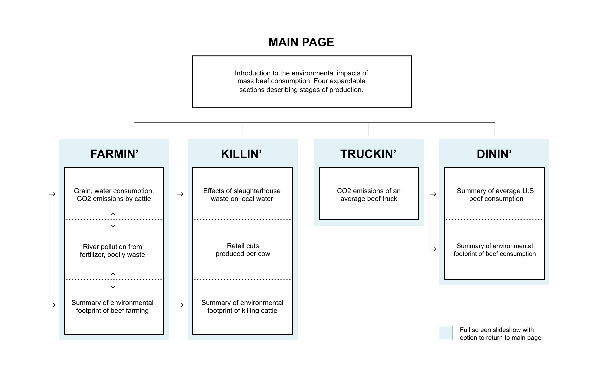
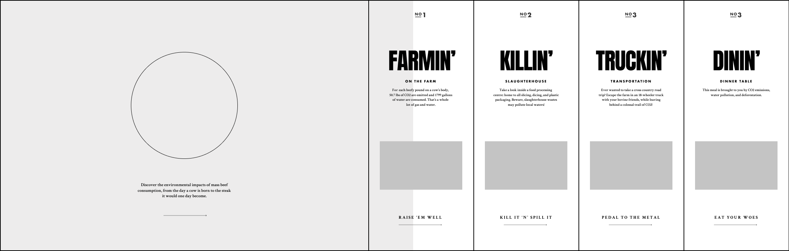
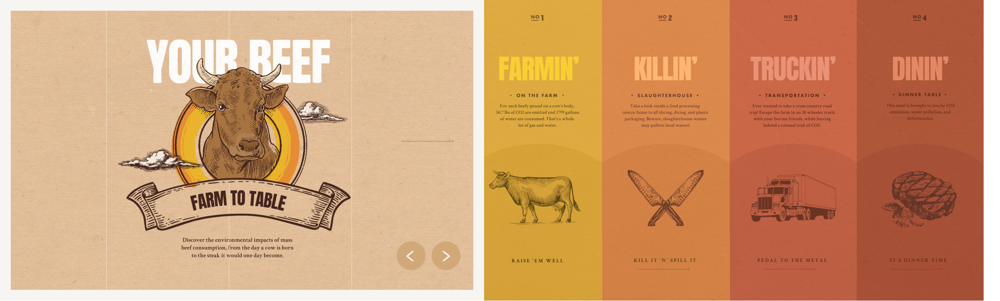

description
North America is moving towards Veganism or Vegetarianism due to the known environmental impacts of red meat. By shifting to a more vegetable-based diet, one person can save approximately 219,000 gallons of water a year. In addition to consuming colossal amounts of water annually, the meat industry contributes to the emission of greenhouse gases, deforestation, water pollution, and waste of food resources — all of which hasten the effects of global warming. Our project intends to emphasize the environmental impact of producing 1lb of beef by outlining its production process from farm to table.
View the final site here
contribution
UI Design, Content Research, Art Direction, Deck Design
team
Audrey Chow, Ethan Ma, Mark Robles
process + research
Our first iteration was to present the environmental impact of red meat. However, the topic is way too broad and we did not want to create a website with overwhelming information. After a few iterations, we narrowed down the environmental impact of Alberta-grown, Vancouver-sold beef, and landed on the topic of “Your Beef from Farm to Table”.
The full background research and design precedent research can be found here
 
information architecture + wireframe
As a team, we decided to create a one page horizontal scroll website. This way, the users would be able to go see and access the process of “Beef from Farm to Table” while scrolling through the site.

art direction
The concept of the web design was to emulate the bold yet organic look of beef packaging. Punchy colours are placed against backgrounds that resemble paper packaging to create a fresh aesthetic.

home page interface
First iteration of the home page following the wireframe and the art direction. However, we thought the graphic design can be improved since the current design did not communicate enough of the feelings we were going for.
infographic + user interface
To avoid long paragraphs and overwhelming information, the infographics are mainly presented in large-font numbers with minimal texts. The interface was designed as a storybook, to give users an entertaining yet informative way to meet their learning goals.
final site
Click here to see the fina site.